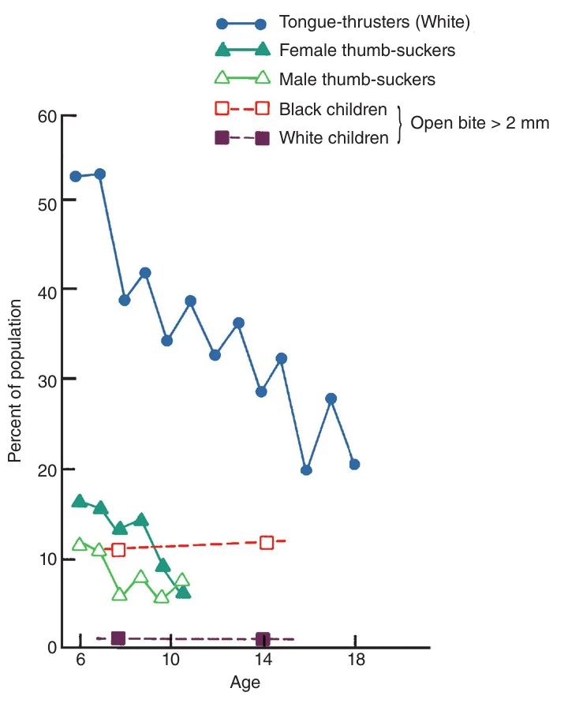
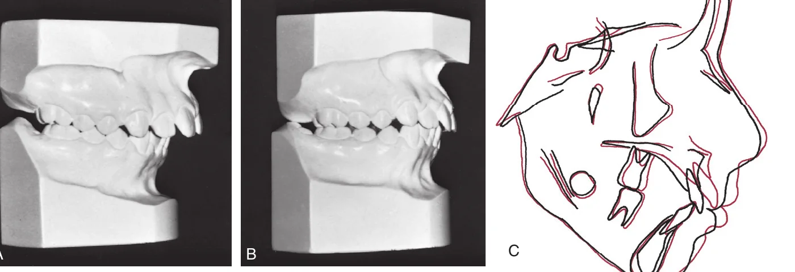
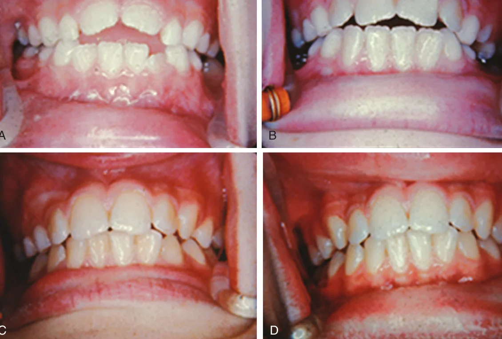

نسخه استخراجشده؛ ترجمه یا تأیید علمی انجام نشده است. وضعیت: captured
پیش از هر بحثی دربارهی عادات، یک اصل را باید محکم بدانی: اثر هر عادت بر دندانها با مدت زمان تعیین میشود، نه با قدرت آن.
دلیلش به بیولوژی حرکت دندان برمیگردد. حرکت دندان نیازمند بازآرایی استخوان است، و بازآرایی استخوان به نیروی پیوسته نیاز دارد، نه به ضربه. نیروی بسیار قوی اما کوتاه، فرصت شروع پاسخ سلولی را نمیدهد.
آستانهی تقریبی برای حرکت دندان، حدود ۶ ساعت در شبانهروز نیروی پیوسته است.
👉 پیامد بالینی این عدد بسیار مهم است: مکیدن شدید اما کوتاه هنگام بازی، اثر بهمراتب کمتری از مکیدن آرام اما تمامشب دارد. کودکی که فقط موقع خواب انگشت میمکد، پرخطرتر از کودکی است که در طول روز و بهشدت این کار را میکند.
💡 پس نخستین پرسش بالینی این است: «چند ساعت در روز؟» — نه «چقدر محکم؟». و پاسخ این پرسش را باید از والدین دربارهی ساعات خواب گرفت.

مکیدن انگشت الگوی نسبتاً ثابتی از تغییرات ایجاد میکند که هرکدام سازوکار روشنی دارند:
| یافته | سازوکار |
|---|---|
| اپنبایت قدامی | انگشت مانع رویش عمودی ثنایاها میشود |
| پروکلاین شدن ثنایای بالا | فشار مستقیم انگشت به سمت لبیال |
| رتروکلاین شدن ثنایای پایین | فشار سطح پشتی انگشت |
| کراسبایت خلفی | پایین آمدن زبان از کام و انقباض عضلهی باکسیناتور هنگام مکیدن |
⚠️ افزایش اورجت، پیامد ترکیبی دو ردیف نخست است: ثنایای بالا جلو میرود و ثنایای پایین عقب میماند، پس فاصلهی افقی از دو طرف بیشتر میشود.
💡 سازوکار ردیف آخر ظریفتر از بقیه است. انگشتِ میان دندانها زبان را پایین نگه میدارد، پس فشار زبان بر سطح لینگوال دندانهای خلفی بالا کم میشود؛ همزمان باکسیناتور هنگام مکیدن منقبض میشود و فشار گونه بیشتر میشود. فشار منفی داخل دهان هم پدید میآید، اما علت باریک شدن قوس نیست. فشار گونه در گوشههای دهان بیشترین است، پس قوس بالا V شکل میشود و باریکی در ناحیهی کانین بیشتر از مولرهاست. این باریکی معمولاً دوطرفه است، ولی مندیبل هنگام بستن به یک سمت میلغزد و آنچه میبینی اغلب کراسبایت یکطرفه با شیفت عملکردی است.
⚠️ از میان این تغییرها، تنگی عرضی قوس کمتر از همه خودبهخود برمیگردد: با قطع عادت، اپنبایت اغلب بسته میشود، ولی کراسبایت خلفی معمولاً اکسپنشن میخواهد.
👉 اپنبایت ناشی از مکیدن معمولاً نامتقارن است و شکلش با انگشتی که مکیده میشود همخوانی دارد؛ همین نشانهی تشخیصی خوبی است.

زمانبندی مداخله، تفاوت میان کمک کردن و آسیب زدن است.
⚠️ اپلاینس نباید تنبیه تلقی شود. کودکی که هنوز آمادهی ترک نیست، با دستگاه فقط مضطرب میشود و اغلب یا آن را میشکند یا عادت را به شکل دیگری ادامه میدهد. آمادگی روانی، پیششرط است نه جزئیات.
💡 خبر خوب که باید به والدین هم گفت: در کودکی که تناسب اسکلتی طبیعی دارد، اگر عادت قطع شود اپنبایت اغلب خودبهخود بهبود مییابد — چون ثنایاها فرصت رویش عمودی پیدا میکنند و بایت بهتدریج بسته میشود. جابهجایی خفیف ثنایاهای شیری در کودک سهچهارسالهی مکنده هم با قطع عادت، زیر فشار لب و گونه به جای خود برمیگردد.
👉 یعنی هدف اصلی درمان، قطع عادت است؛ بستن بایت اغلب پیامد آن است نه هدف مستقل.
💡 پستانک هم همین اثرها را دارد و کراسبایت خلفی با آن حتی شایعتر است، بهویژه اگر استفاده بیش از ۱۸ ماه ادامه یابد؛ پستانکهایی که شکل «فیزیولوژیک» دارند هم برتری ثابتشدهای ندارند. مزیت عملی پستانک این است که میتوان آن را کنار گذاشت، ولی انگشت همیشه در دسترس کودک است.
